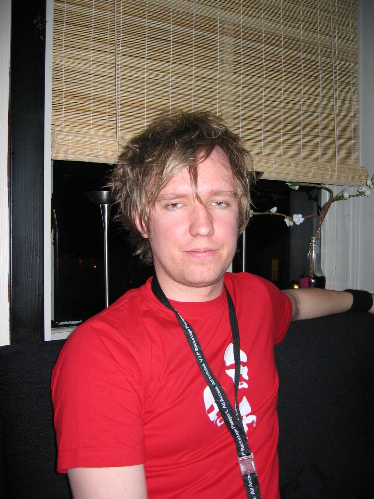
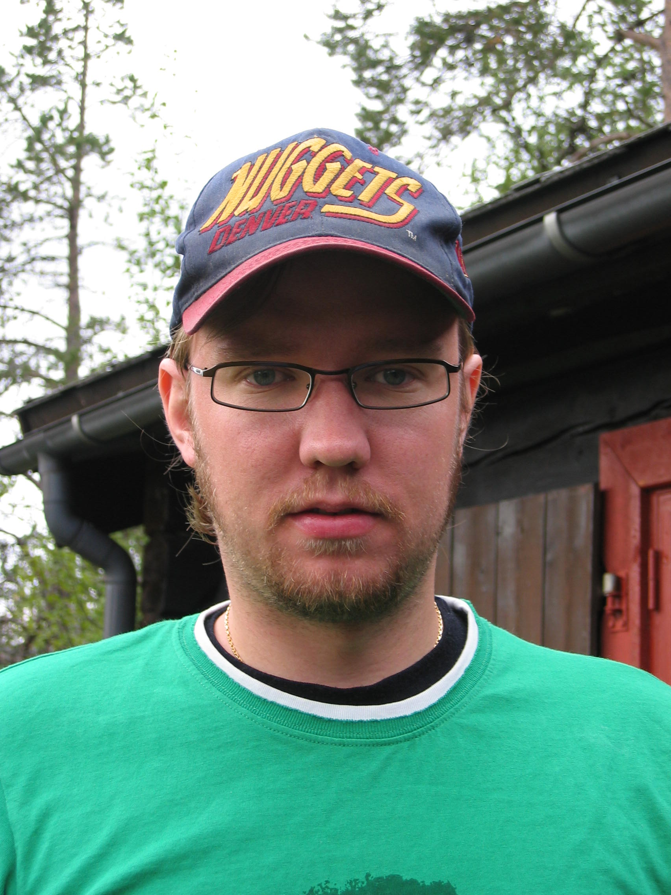
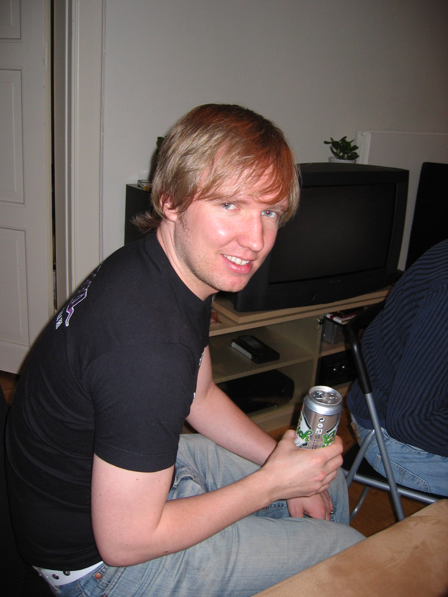
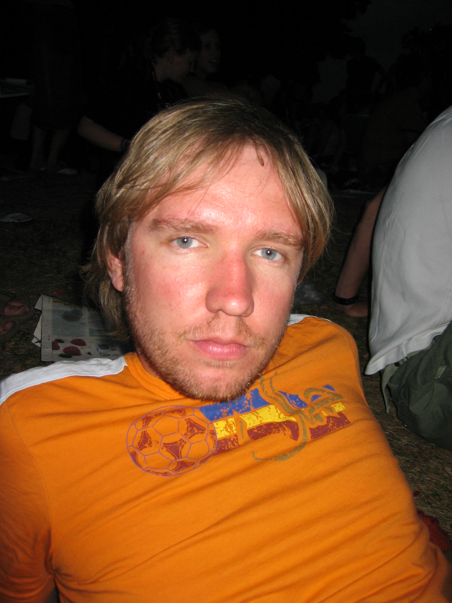
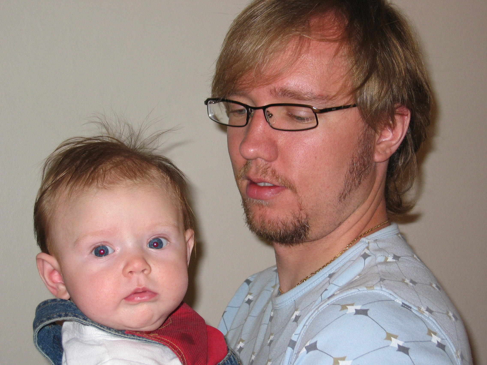
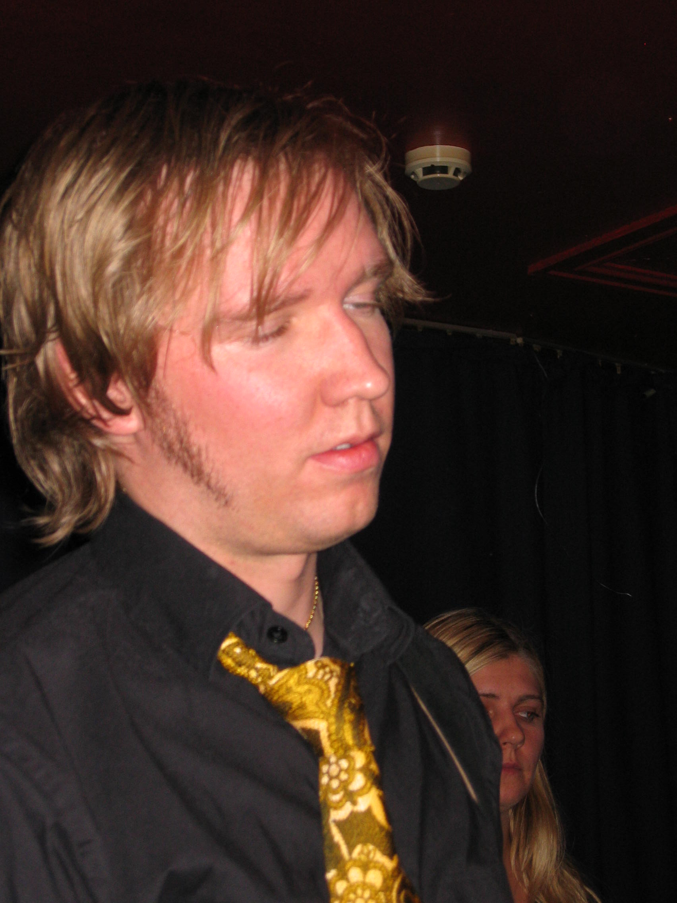

50 årsfest
🔙 Jeg ble 50 fulle, vakre år i vår, men glemte å feire ordentlig.
Eller var for opptatt med å prøve å ikke bli gammal. Eller prokrastinerte så lenge at det ble for seint.
🙅♂️ Uansett: Det må jo feires at dette også gikk bra, og bedre for seint enn aldri.


🕺 Jeg har funnet ut at jeg har lyst til å ha det gøy sammen med gode venner, uten å arrangere så mye sjøl. Eller at noen andre som føler ansvaret må organisere og rydde.
Derfor blir det på et eget lukket lokale med bartender og servering. Jeg sørger for å sette i gang festen med mat og drikke fra start, så blir det selvkost utpå kvelden.





🧑🧑🧒🧒 Det blir venner fra Toten og fra studietida, venner fra et par jobber og noen venner fra nabolaget.
Ingen tvinges til å snakke med noen de ikke vil snakke med – jeg tar ansvar og skal snakke med alle og ha minst en god klem fra alle i løpet av kvelden.
🎭 Kulturelle innslag er hjertelig velkomne.
(Hvis du lurer på om du kjenner noen andre som kommer, så bare spør.)
Gi lyd! 🙋♂️
Trykk på knappen, så åpnes en ferdig adressert e-post. Skriv gjerne bare «Jeg kommer!» – eller noe langt mer kreativt.
Jeg kommer! 🥂Svar sendes til vegard.steinsholt@gmail.com